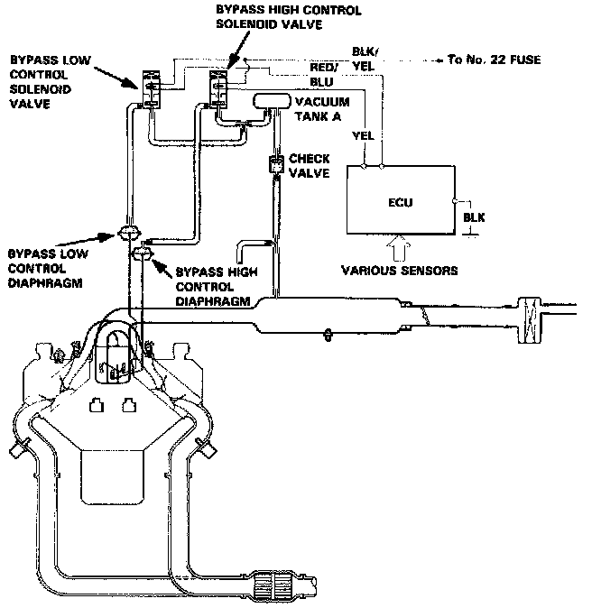
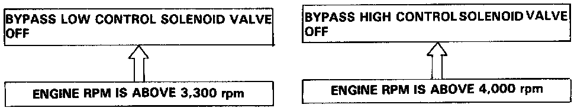
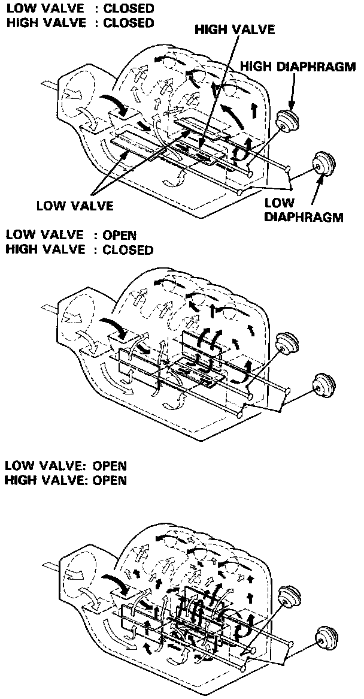

Chamber Volume Control System

Chamber Volume Control System Description
Satisfactory power performance is achieved by closing and opening the bypass control valves. High torque at low RPM is achieved when the valves are closed, whereas high power at high RPM is achieved by when the valves are opened.

Operation

Operating Modes